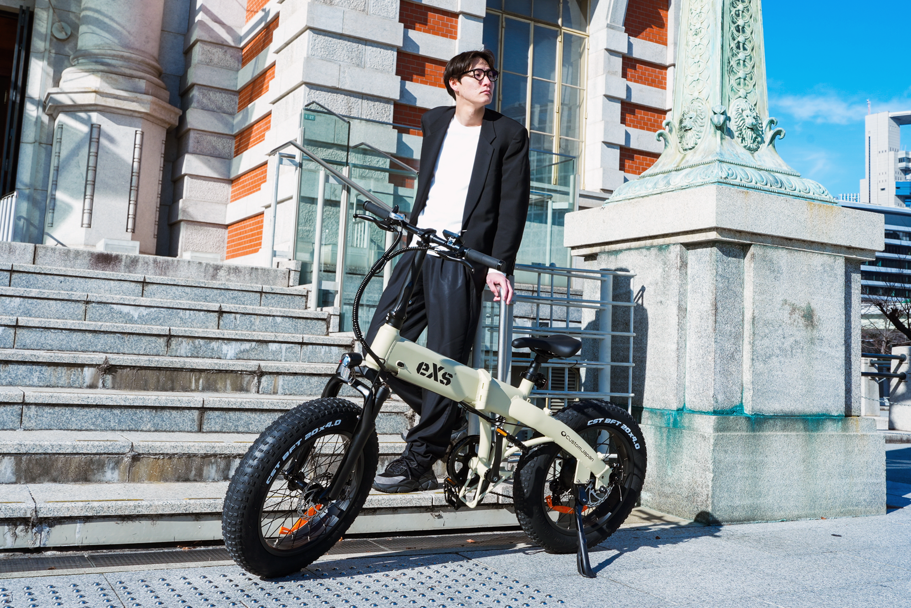

Why eXs Now?
なぜ今、eXsなのか
2023年の改正道路交通法による「特定小型原付」の誕生。
2025年の排ガス規制に伴う、50ccエンジンスクーターの生産終了。
移動のルールが激変する今、必要なのは「新しい選択肢」です。
eXs（エクス）は、「電動アシスト自転車（E-Bike）」と「免許不要の電動キックボード（TKG）」の2つの最適解を、
創業以来日本のモーターサイクル市場を支えてきたパーツサプライヤーとしての強固なバックアップと共にご提供します。

Voice of Professionals
プロメカニックが選ぶ、
次世代モビリティ「eXs Street」
「正直、トータルバランスの良さに驚きました。剛性感は25万円クラスのE-Bikeに匹敵します。それでいて価格は一般的な電動アシスト自転車並み。
パーツサプライヤーが母体だけあって、メンテナンス性も考慮されています。お客様に自信を持って『これなら長く乗れるよ』と勧められる一台です。」
— サイクルショップ店長（福岡県）
Business Partnership
業種を問わずお取り扱い可能
バイクショップ、自転車店はもちろん、アパレル、雑貨店、宿泊施設など、多様な業種での導入実績があります。
マーケティングサポート
販促用POP、画像素材の提供、SNSでの紹介など、販売を強力にバックアップします。
安心の企業体制
運営は「株式会社カスタムジャパン」。長年のパーツ供給ノウハウで、アフターパーツも迅速に供給します。

20×4インチのファットタイヤで
街乗りもオフロードも。
走破性の良いオールテレインファットタイヤと、上質なコンタクトパーツを採用し、スタイルと性能を両立。街乗りもオフロード（自然）もシームレスに横断できるe-bike（電動アシスト自転車）です。
マットブラック、マットグレー、マットベージュの3色展開は、日々のシーンにも自然に溶け込み、装いを一層引き立てます。
その佇まいは、個性を豊かに表現する相棒となるでしょう。

48V 10Ahの高性能バッテリー
フレームにすっきりと内蔵された48V・10Ahバッテリーは、スタイルを損なわずに最長約80kmの走行性能を発揮します。

コンパクトな液晶ディスプレイ
フレームの世界観を壊さず、静かに機能美を引き立てるコンパクトなカラー液晶ディスプレイ。
見やすく洗練されたUIは、アシストレベル・速度バッテリー残量をひと目で把握。

車にも積み込める収納性
スリーステップで折りたためる移動をただの“手段”にしない。
コンパクトにたためるので、アトリエにも、車のトランクにも。ファットタイヤにも関わらず収納性にも優れています。

空気入れ内臓のサドルポスト
サドルを抜けばすぐ空気が入れられる便利機構搭載で出先やオフロードでも安心。
スペースを無駄にせず、遊び心を忘れないeXs Streetならではの魅力。
3 Steps to Start
最短3日で販売スタート
Entry
下記フォームよりエントリー
(1分で完了)
Account
専任担当より
「パートナーID」発行
Order
専用サイトから
卸価格で発注可能
※ 審査の結果、ご希望に添えない場合がございます。
FAQ
お取引・契約について
ノルマはありますか？
いいえ、販売ノルマは一切ございません。1台からの小ロット発注も可能ですので、リスクなく開始いただけます。
試乗車は用意できますか？
はい、パートナー様向けの特別価格にて試乗車（デモカー）をご用意しております。詳細はお問い合わせください。
修理やアフターサポートはどうなりますか？
基本的なメンテナンスは販売店様にお願いしておりますが、パーツ供給や技術的なサポートは弊社が全面的にバックアップいたします。
バイクショップ以外でも取り扱えますか？
はい、可能です。アパレルショップや雑貨店、ホテルやグランピング施設など、多様な業態での導入実績がございます。
製品・法律・仕様について
免許は必要ですか？年齢制限はありますか？
A. モデルによって異なりますが、どちらも運転免許証は不要です。
・eXs 1 TKG（電動キックボード）： 16歳以上であれば、免許不要で運転可能です（16歳未満は運転・購入禁止）。
・eXs Street（電動アシスト自転車）： 自転車と同じ扱いのため、免許も年齢制限もありません。どなたでもお乗りいただけます。
ヘルメットの着用は義務ですか？
A. どちらも「努力義務」ですが、着用を強く推奨します。
法律上、両モデルともヘルメット着用は個人の判断に委ねられていますが（努力義務）、万が一の転倒事故から頭部を守るため、当店では着用を強くおすすめしております。
ナンバープレートや自賠責保険は必要ですか？
A. eXs 1 TKGのみ必要です。
・eXs 1 TKG： 公道走行には、自治体でのナンバー登録（無料）と自賠責保険への加入が法律で義務付けられています。
・eXs Street： 自転車ですので、ナンバーや自賠責は不要です。ただし、万が一の事故に備えて「自転車保険」への加入と、盗難対策としての「防犯登録」をおすすめします。
歩道を走ることはできますか？
A. 条件付きで走行可能です。
・eXs 1 TKG： 最高速度を6km/hに制限する「歩道モード（緑色ランプ点滅）」に切り替えた場合のみ、自転車通行可の歩道を通行できます。
・eXs Street： 一般的な自転車と同様です。「自転車通行可」の標識がある歩道や、運転者が13歳未満・70歳以上の場合などは徐行して通行できます。
どれくらいの距離を走れますか？充電時間は？
A. 家庭用コンセントで約6時間で満充電になります。
・eXs 1 TKG： 1回の充電で約20〜25km走行可能です。近距離の移動に最適です。
・eXs Street： 大容量バッテリーを搭載しており、約60〜80kmの長距離走行が可能です。通勤・通学にも十分対応します。
※走行距離は荷重、路面状況、気温等により変動します。
坂道は登れますか？
A. はい、どちらもパワフルに登坂できます。
・eXs 1 TKG： 最大勾配約26%の登坂能力があり、街中の急な坂道でもスムーズに進みます。
・eXs Street： 電動アシストに加え、7段変速ギアを搭載しているため、適切なギアを選べば急坂も楽に漕ぎ上がることができます。
タイヤがパンクしたらどうすればいいですか？
A. モデルにより対応が異なります。
・eXs 1 TKG： 8.5インチの「パンクレスタイヤ」を採用しているため、空気入れやパンク修理の手間がありません。
・eXs Street： 極太のタイヤ（チューブ式）を使用しています。通常の自転車と同様に空気入れが必要です（サドルポストに空気入れが内蔵されています）。パンクの際は自転車店等で修理可能です。
組み立ては必要ですか？（配送の場合）
A. eXs Streetのみ簡単な組み立てが必要です。
・eXs 1 TKG： 箱から出して展開するだけですぐに使用可能です（ナンバー取得等の準備を除く）。
・eXs Street： 9分組（90%完成状態）でお届けします。ハンドルやペダルの取り付けなど、付属の工具で簡単に組み立てられます。動画マニュアルもご用意しています。
保証期間はありますか？
A. ご購入から6ヶ月のメーカー保証がつきます。
本体、バッテリー、モーターなどの電気部品に初期不良や自然故障が発生した場合、保証規定に基づき対応いたします。
タイヤなどの消耗品や、転倒・改造による故障は対象外となります。